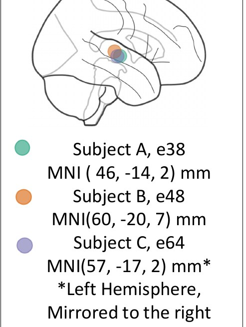

Xinran Yu, Arish Alreja, Michael J. Ward, Taylor Abel, Avniel Singh Ghuman University of Pittsburgh · University of California, Los Angeles
Intracranial EEG from three patients during natural conversation. Two posters, one dataset.
Poster 1 asks who is speaking. Poster 2 adds where the patient is looking.
APAN · Poster #124 · Fri 11/13, 4:30–6 PM
Decoding “who speaks when” in real-world conversations
Speech detection and speaker identity classification from intracranial EEG
Summary
iEEG and eye-tracking glasses in 3 patients during natural conversation
Goal: tell when the patient speaks, when others speak, and who is speaking
Above chance in every patient; strong responses in superior and transverse temporal cortex
Telling speakers apart from a single electrode: preliminary
Data and task
3 patients · ~110 electrodes each · ~10 h of conversation
Input X: brain activity (ERP + broadband)
Output Y: who is speaking, aligned in time
Tap a figure to enlarge.
All three patients
Speech vs. silence and own vs. others’ speech (chance 50%)
Classifier weight sits mostly after speech onset
Others · Self · Silence
3-way, chance 33.3%
All electrodes, ERP + broadband
Bars: electrodes per brain area (grey = implanted, coloured = used)
← swipe, or tap A / B / C →
Who is speaking? One electrode
Two speakers, one superior temporal electrode (chance 50%)
Staff vs Daughter 65.8% · Mom vs Dad 56.0% · Mom vs Daughter 60.4%
Electrode chosen from several: preliminary
Lower plots: ERP and broadband, −250 to +250 ms around speech onset

Subject A
Subject B
Subject C
← swipe, or tap A / B / C →
Conclusions
Others’ speech, the patient’s own speech, and silence can be distinguished from iEEG in real-world settings in all three patients: 69–81% 3-way accuracy (chance 33%)
The classifier uses multiple electrodes, mainly in the superior temporal and parietal cortex
A single superior temporal electrode separates two speakers above chance (56–66%): preliminary
Next: more speakers and more patients
SfN · Neuroscience 2026
Neural correlates of gaze and conversation in real-world social interaction
Revealed by intracranial electroencephalography
Summary
Same 3 patients, now with eye-tracking glasses and their visitors
Question: how does the brain combine where we look with what we hear?
Data: the 200 ms after each fixation onset (ERP + broadband)
Activity after each fixation carried information about speech in all three patients
Design
Looking at a face or an object × speech or silence
Fixation onset aligned to brain data and speaker labels
Tap a figure to enlarge.
Warm-up checks
Who speaks when works in these recordings (top)
Face vs. object (green) is above chance, but faces often coincide with speech: control analysis in progress
3-way classification
62.3% · 66.3% · 67.1% (chance 33.3%)
Silence is separated best; face vs. object during speech is harder
← swipe, or tap A / B / C →
Fixation-locked responses
Broadband and ERP, 0–200 ms after fixation
Top: superior temporal electrode · bottom: insula electrode
Subject A
Subject B
Subject C
← swipe, or tap A / B / C →
Conclusions
A 3-way classifier on the 200 ms after fixation onset reaches 62–67% (chance 33%) in all three patients
Speech vs. silence is separated best (silence correct in 95%, 89%, 73% of cases); face vs. object during speech is harder
The classifier draws on parietal and superior temporal electrodes in every patient
Next: control for face–speech overlap, then decode face identity and expression
Where the classifier looks
Before vs. after speech onset. Drag the handle.
BeforeAfter
Before = 250 ms before speech onset · After = 250 ms after
Right hemisphere, lateral view
Each dot is one electrode; colour = share of the 3-way classifier’s weight
Grey = no weight
After onset: 73–80% of the weight
What the patient sees, and what the brain does
Left: world camera with face / person / monitor boxes; the orange cross marks the gaze. Top: audio waveform. Right: iEEG voltage and broadband activity of every electrode, ±500 ms. The conversation partner is a member of the research team.